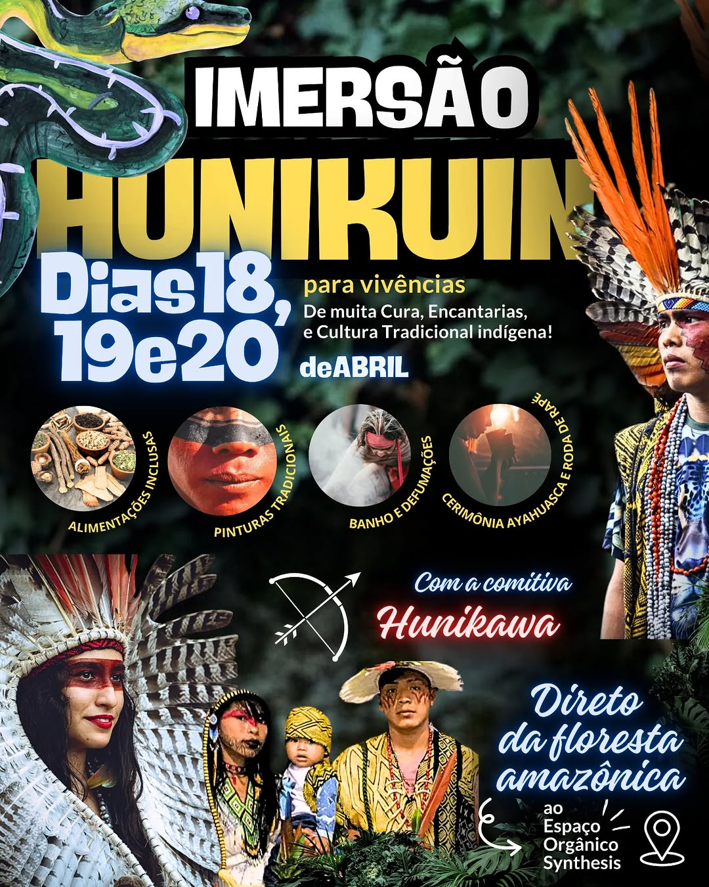
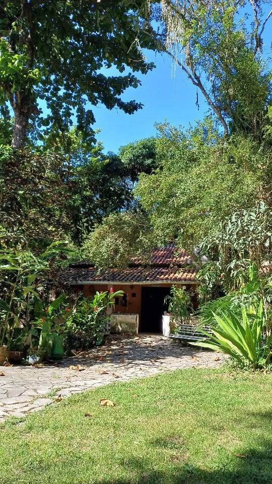
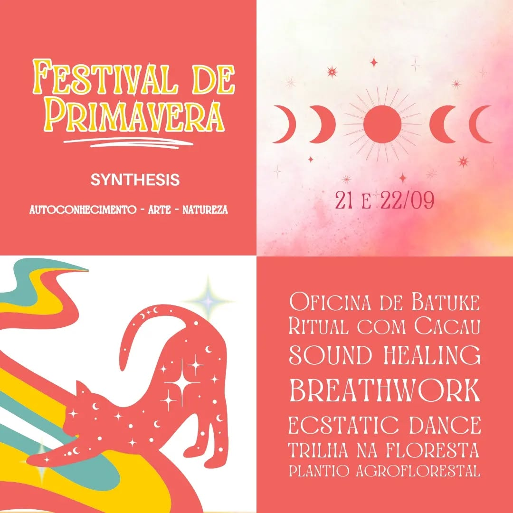
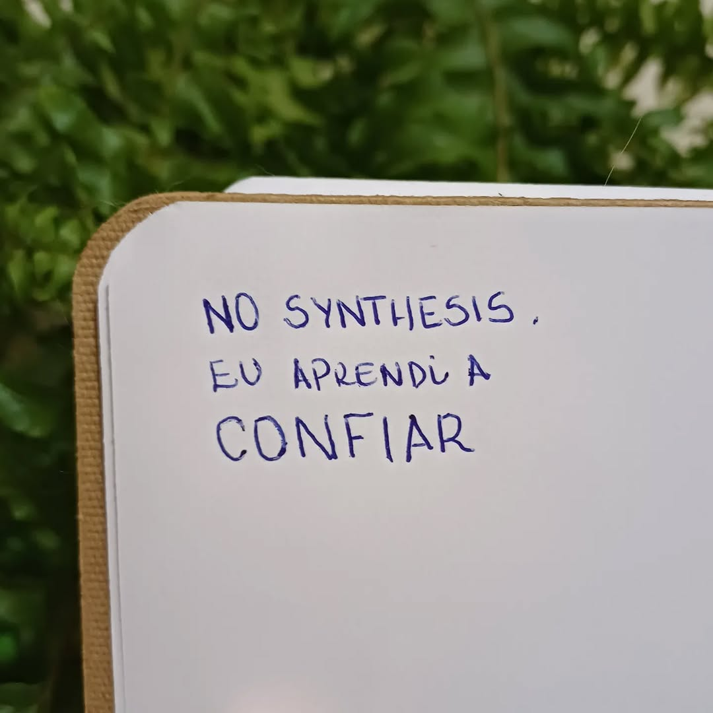
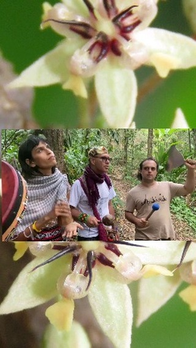

Há mais de 40 anos cuidando do universo interno num mundo caótico em constante transformação.

Sobre o EspaçoO Espaço Orgânico Synthesis tem raízes profundas: a Clínica Synthesis funcionou em Niterói por 30 anos. Hoje, Silney Ortlieb (CRP 05/171) conduz o trabalho num sítio em São Gonçalo, a apenas 15 km da Ponte Rio-Niterói — com fácil acesso e farta condução. Um lugar vivo, onde a natureza, o corpo e a mente se encontram em rituais, retiros e experiências alternativas de cura.
"Há mais de 40 anos cuidando do universo interno num mundo caótico em constante transformação."
Cada encontro é único, cada retiro é uma jornada. Venha viver uma experiência que transforma.
— Silney Ortlieb · Psicólogo · CRP 05/171
Cada vivência é pensada para promover cura, autoconhecimento e reconexão com sua essência.
Imersões intensivas em contato com a natureza para desacelerar, refletir e reconectar com o que realmente importa. Experiências de 1 a 3 dias em nosso espaço em Niterói.
Cerimônias integrativas que combinam elementos da psicologia, espiritualidade e tradições ancestrais para processos de cura e transformação profunda.
Encontros temáticos sobre saúde emocional, meditação, respiração e práticas integrativas abertas para todos que buscam um olhar mais amplo sobre bem-estar.
Consultas individuais com o Dr. Silney via videochamada. Psicoterapia acessível, onde quer que você esteja, com a mesma profundidade e presença do trabalho presencial.
Atendimento clínico individual em Niterói, com abordagem integrativa e humanista — 40 anos de escuta e cuidado a serviço da sua saúde emocional.
Grupos de vivência e partilha onde o encontro com o outro potencializa o processo de autoconhecimento, com facilitação do Dr. Silney.
Décadas de prática, centenas de vidas transformadas, um espaço construído com amor e intenção.




Não importa onde você esteja — o cuidado do Dr. Silney chega até você. Sessões de psicoterapia individual online, com toda a profundidade e presença de 40 anos de experiência.
"O retiro no Espaço Synthesis foi uma das experiências mais profundas da minha vida. Saí de lá transformada, com uma clareza que não tinha há anos."
"O Dr. Silney tem uma escuta que poucos profissionais têm. 40 anos de experiência fazem toda a diferença. Me sinto completamente acolhida a cada sessão."
"Os rituais do Synthesis são únicos. A combinação de psicologia e espiritualidade cria algo que vai muito além de qualquer terapia convencional."
"Já fiz vários retiros em vários lugares, mas o Espaço Orgânico Synthesis tem algo especial — a presença do Silney faz toda a diferença no processo."
Seja em um retiro, ritual, sessão online ou presencial — o Espaço Orgânico Synthesis está a 15 km da Ponte Rio-Niterói, com fácil acesso e farta condução.
Falar pelo WhatsAppEstamos em Niterói e atendemos também online para todo o Brasil.
São Gonçalo, RJ
15 km da Ponte Rio-Niterói
Para todo o Brasil
via videochamada